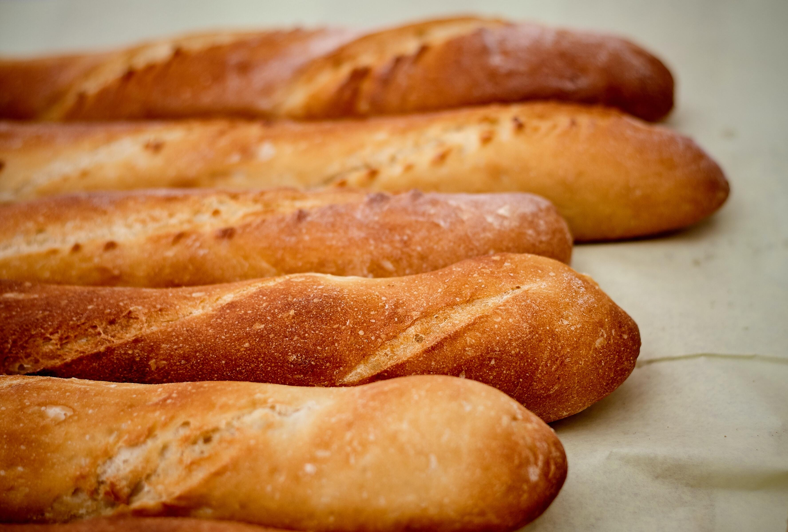
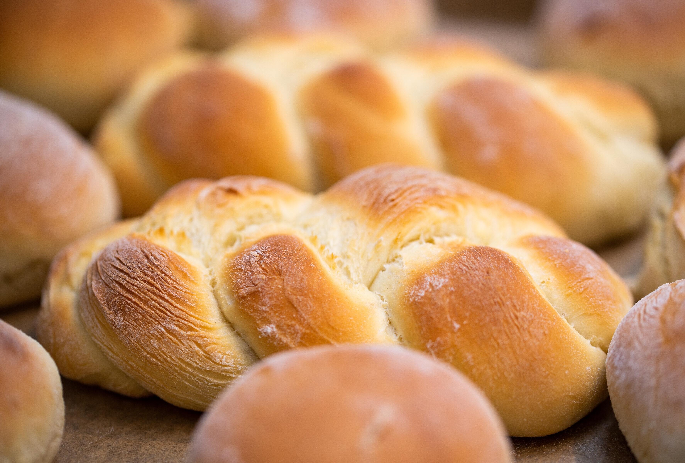
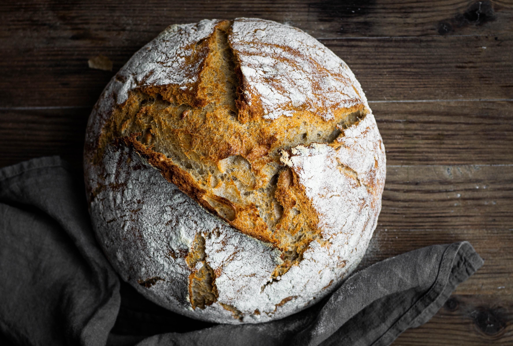

When Flour and Water Come Together
Voir Les Pains
A baguette is a long, thin type of bread of French origin that is commonly made from basic lean dough. It is distinguishable by its length and crisp crust.
Learn More
Challah is a special bread of Ashkenazi Jewish origin, usually braided and typically eaten on ceremonial occasions such as Shabbat and major Jewish holidays
Learn More
Sourdough bread is made by the fermentation of dough using naturally occurring lactobacilli and yeast. The lactic acid produced by the lactobacilli gives it a more sour taste.
Learn More